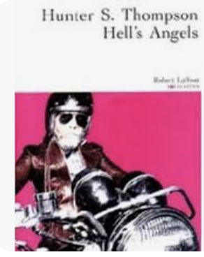
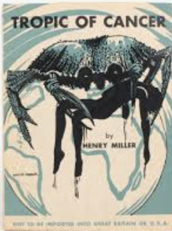
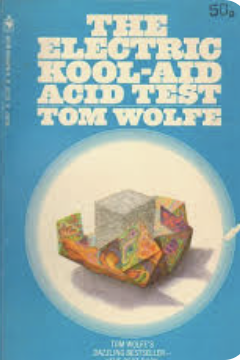

INDIA'S WORLD
BIO
 India Smith was born in the golden heart of Central California in 1996, where the air was thick with
the scent of orange blossoms and possibility. Her journey led her through the sprawling cityscapes
of Los Angeles, where the pulse of the city resonated with her restless spirit. Now she calls the
rugged beauty of Jackson, Wyoming, home—a place where the mountains stand tall and the stars shine
brighter against the clear night sky.
India Smith was born in the golden heart of Central California in 1996, where the air was thick with
the scent of orange blossoms and possibility. Her journey led her through the sprawling cityscapes
of Los Angeles, where the pulse of the city resonated with her restless spirit. Now she calls the
rugged beauty of Jackson, Wyoming, home—a place where the mountains stand tall and the stars shine
brighter against the clear night sky.
A lifelong wanderer, India has traced the lines of countless maps, collecting stories from distant lands and forgotten highways. Her travels have taken her through the vibrant markets of Marrakech, the winding streets of European towns, and the vast, open landscapes of the American West. With each journey, she’s gathered not just experiences, but a deep love for the art, culture, and humanity that define every corner of the world.
Music is the heartbeat of India’s life. As a volunteer radio DJ on KHOL 89.1, she curates soundscapes that tell stories, evoke emotions, and connect people. Whether spinning classic vinyl or unearthing hidden gems from underground scenes, she thrives on the energy and community that music brings. Her passion for music extends beyond the airwaves—she’s a fervent lover of live shows, intimate venues, and the vibrant music scenes that give life its rhythm. Books remain her sanctuary, offering an escape into the depths of great literature. She’s a soul forever enchanted by the power of words, finding solace and adventure in the pages of her favorite novels. Art and culture, too, weave their way into her life, inspiring her with the colors, sounds, and stories of the world.
Always by her side is Sunny, her loyal boxer, a companion as adventurous as she is. Together, they roam the landscapes of both reality and imagination, ever chasing the next horizon, ever seeking the next story. India’s life is a symphony of movement—part wanderer, part storyteller, part music maker—stitched together by a thread of wanderlust and an enduring love for the beauty of existence.
 India Smith’s journey into graphic design and coding is a vibrant story of creativity and
determination. Growing up in the energetic swirl of Los Angeles, she was captivated early on by the
power of visual storytelling and the boundless possibilities of digital art. Teaching herself the
intricacies of design and development, she found a passion for crafting visuals that not only
captivate but also communicate, and writing code that brings bold ideas to life with precision and
flair.
India Smith’s journey into graphic design and coding is a vibrant story of creativity and
determination. Growing up in the energetic swirl of Los Angeles, she was captivated early on by the
power of visual storytelling and the boundless possibilities of digital art. Teaching herself the
intricacies of design and development, she found a passion for crafting visuals that not only
captivate but also communicate, and writing code that brings bold ideas to life with precision and
flair.
Driven by a love for the intersection of music, culture, and design, India aspires to channel her talents into the legendary CREEM magazine. The rebellious spirit of rock ‘n’ roll, combined with her technical skills and artistic vision, makes Creem the perfect canvas for her creativity. India dreams of contributing to its legacy, pushing boundaries and shaping the visual language of a publication that has long inspired her. With a relentless curiosity and an eye for aesthetics, she’s ready to carve her path, creating work that resonates deeply and leaves a lasting impact. India’s passion for design isn’t just about creating visually striking work; it’s about telling stories that matter. She believes that great design is a conversation starter, a way to connect people to ideas, emotions, and experiences. Her journey in coding has further empowered her to bring these stories to life in the digital realm, blending functionality with artistry. Whether she’s designing a sleek interface or crafting a compelling visual narrative, India approaches each project with the same fervor and dedication.
BLOG
Sunny Bear
Sunny, my 7-year-old boxer, is a bundle of loyalty and charm wrapped up in a soft, fawn coat. She’s a bit of a character, radiating warmth and enthusiasm everywhere she goes, living up to her sunny name. Her expressive face often shifts between curiosity, joy, and that classic, endearing boxer goofiness. Even after all these years, she still has the boundless energy of a puppy, chasing after balls with laser focus, though she’s quick to take breaks for belly rubs and head scratches. One of Sunny's unique qualities is her incredible intuition. She seems to know just when I need a little extra love or encouragement. Whether it’s by gently resting her head on my lap or nudging me with her nose, Sunny has an uncanny way of saying, “I’m here for you.” She’s particularly great with kids and other animals, making her the perfect companion for anyone she meets. Watching her interact so gently, yet playfully, reminds me every day of the joy animals bring into our lives. As Sunny grows older, I've noticed that she’s more inclined to cozy up on the couch or bask in the sun during lazy afternoons. Though she might not run quite as fast as she once did, her loyalty and gentle spirit are stronger than ever. Sunny has become more than a pet—she’s family, a loyal friend, and an irreplaceable part of my everyday life. Each day with her is a reminder of the incredible bond we share, and I’m grateful for every sunny moment she brings into my world.
Snow King Concerts
Summers in Jackson, WY, are magical, and few events capture that spirit like the Snow King Concerts. Held at the top of Snow King Mountain, these outdoor concerts bring music, community, and the beauty of the Tetons together under the open Wyoming sky. Locals and tourists alike gather on the green, surrounded by tall pines, with the mountain looming behind the stage—a natural backdrop that elevates the experience of live music. The atmosphere is relaxed and inviting, with people spread out on blankets, kids running barefoot on the grass, and everyone soaking up the long, golden hours of Jackson’s summer evenings. The lineup each summer features a diverse mix of artists, ranging from Americana and folk to rock, bluegrass, and indie. This variety ensures there’s something for everyone, appealing to the eclectic tastes of the Jackson community and its visitors. Many of the artists share a love for the great outdoors, making Snow King a favorite venue for musicians as well. It’s not uncommon to hear performers pause between songs, taking in the breathtaking view and connecting with the crowd about the beauty of the place. What makes the Snow King Concerts truly special, though, is the sense of community. These evenings become a gathering space for people of all ages and backgrounds. Friends and families reunite, local food trucks serve up Jackson’s best bites, and a feeling of joy fills the air. You might find yourself dancing barefoot in the grass with a stranger or sharing a laugh with the family seated nearby. It’s the kind of event that reminds us of the importance of community, nature, and music—three things that seem to be woven into the fabric of Jackson life.
Baja California, MX
Last spring, my friends and I took an unforgettable trip to Baja California, where we stayed in a beach house that felt like a hidden paradise. From the moment we arrived, it was clear that this was the escape we all needed. The house itself was perfect—nestled right along the beach with expansive views of the Pacific. Each morning, we’d wake up to the sound of waves crashing on the shore and the sun casting its first light across the water. The simplicity of it all—the sand, the sea, the company—made it easy to leave behind the rush of daily life. Days in Baja unfolded slowly, in the best way. We’d start by strolling along the shore, collecting shells and spotting sea creatures in the tide pools. When the sun was high, we’d grab our towels, spread out on the sand, and dive into the cool, clear water. Some days, we took out paddleboards, and on others, we just floated, letting the waves carry us. The beach house was fully stocked with everything we needed, so we could spend hours out there, just talking, laughing, and making memories under the Baja sun. Evenings were some of the best moments. After long days by the ocean, we’d come back to the house, whip up some fresh seafood, and settle on the terrace for dinner with a view of the sunset. Watching the sun dip below the horizon, casting fiery colors across the sky, was something none of us could get enough of. We’d stay up late into the night, sharing stories and listening to the waves. That trip to Baja was more than just a getaway—it was a chance to reconnect, slow down, and appreciate the beauty of friendship and nature in one stunning place.
BOOKS
| COVER | TITLE | AUTHOR | GENRE |
|---|---|---|---|
 |
Slouching Towards Bethlehem | Joan Didion | Essays |
|  | Hell's Angels | Hunter S Thompson | Gonzo Journalism |
|  | Tropic of Cancer | Henry Miller | Fiction |
|  | Electric Kool Aid Acid Test | Tom Wolfe | Non Fiction |
MUSIC
I am a radio DJ on KHOL 89.1 in Jackson, WY. I love sharing my playlists with the community and creating space for people to find new music to love. Music has always been a huge art of my life, especially growing up in Los Angeles where I was always going to shows.
I am constantly making playlists on my Spotify account, Subatomica. I log all my radio playlists there by date. I love using a platform where my friends can add me and see what I am to in the playlist world.